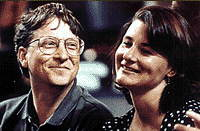

Activity1:
Alta Vista is a keyword search engine and results come from matching the works input. Results can be reduced by carefull selection of words and use of boolean qualifiers.
Yahoo is a Web Directory, information is categorised as it would be in a catalogue. If information fits comfortably into specific catagories then yahoo can be extremely useful. Results on searching for History of the Internet also brought up History of the World Wide Web.
Activity 2:
search used was +profile "Bill Gates". The use of boolean qualifier reduced results considerably and brought up useful links first.
Activity 3:
Photograph found by searching for +image:gif "Bill Gates".. howevere image was not forthcoming, searching within results was needed.
